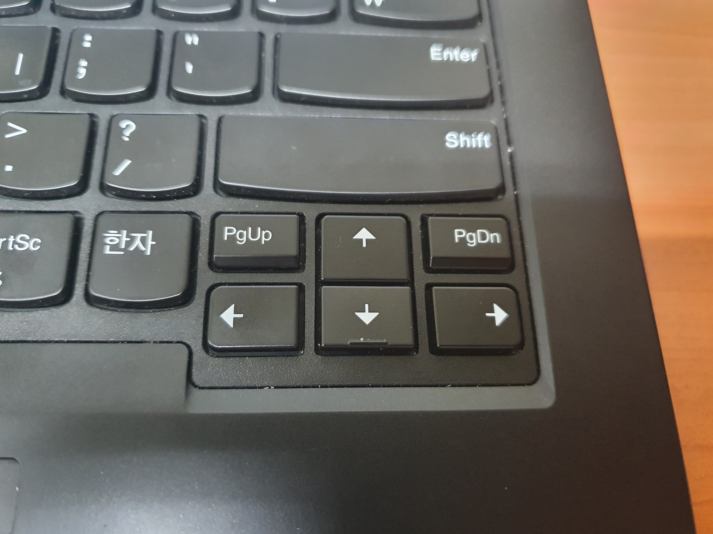

PowerToys의 여섯번째 기능은 파일 탐색기 추가 기능이다. 이 기능은 .svg파일, .md파일들을 파일탐색기 내에서 미리보기 할 수 있게 만들어준다.
내가 가장 많이 사용하는 단축키, Win+ Shift + S 이다.
그동안 스크린을 캡쳐하기 위해 하나하나 프린트 스크린한 후 그림판에서 다시 잘라 붙여넣었거나, 캡처도구를 사용하여 붙여넣었다면 이 기능은 무척 편리하게 느껴질것이다.
윈도우키, 시프트키, S키, 키배열도 왼손만으로 아주 쉽게 누를 수 있다.
